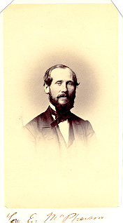

Samuel Fisher writes from Fayetteville in Franklin County concerning the Fisher estate and pending debts that must be paid.
Edward McPherson writes of being caught in a rain storm and of the accommodations of the inn.
Edward McPherson writes of the impending death of E. (a female relative) and objections to Governor Curtin's renomination of Dewitt.
E. (apparently a niece of one of Edward McPherson's parents) discusses her death and another person's death. She inquires about McPherson's mother's health.
E. asks of Edward McPherson's mother's health, mentions the death of a friend, and disruptive problems involving a member (Van Wycke) of McPherson's church.
Edward McPherson mentions the printing of pamphlets, interactions with a lady friend, and a new type of hat.
Edward McPherson notifies his father of his arrival and mentions the Main Line Bill.
Edward McPherson notifies his father of his arrival and describes a visit to the Mint to purchase large amounts of cent notes and to order a plate, possibility for printing.
McPherson offers his suggestions to an unknown recipient for committee members from Franklin County and Adams County.
McPherson writes his father during his vacation in Bedford Spring with Lizzie and discusses news of friends.
Edward McPherson mentions friends and his recent travels, and talks of the progress of the Mint order.
Edward McPherson writes of the recent panic in the stock market. He also notes that he plans to profit by buying shares of Reading Railroad because he is confident that prices will rise again.
Edward McPherson visits New York for business related to a trial case in Maryland. He mentions that stocks continue to fall, but is not worried.
Edward McPherson plans to buy Cumberland Coal stock and mentions that the Reading stock is improving.
Edward McPherson expresses his intention to visit a Mrs. Carson and mentions seeing other friends.
Edward McPherson informs his father of his impending arrival at home with political gossip on Helster, Fillmore, and Cooper.
E. writes to her aunt, Edward McPherson's mother, with a detailed description of Lizzie Tyler's wedding and gifts.
E. responds to Edward McPherson's letter mentioning his parents' poor health. She describes the scattering of friends after the Tyler wedding and mentions the care of some (apparently) orphaned children.
E. has a severe cold. She refers to the impending death of a Mr. Ramsey and expresses her concern of Edward McPherson's father's declining health. She also discusses the Gettysburg Presbyterian Church's problem with a Mr. Van Wycke, noting Edward's fondness for the man.
Edward McPherson expresses relief at his parents' improving health.
Edward McPherson writes of the social events in Philadelphia, discusses friends and acquaintances, and requests news about friends.
E. mourns the loss of Edward McPherson's father, her uncle. She refers to his excellent character and expresses concern for her aunt during this time.
Edward McPherson offers to sell the bank building to the Bank and mentions his father's attentive involvement in the affairs of the Bank.
H. G. McPherson writes to her niece of her removal to Mrs. T.'s former home in Gettysburg and of her son Edward's devotion to her. She also mentions the drastic changes in the town of Gettysburg.
Thaddeus Stevens offers advice to Edward McPherson on his campaign, including the liberal use of money.
S. Russell considers Edward McPherson's nomination for Congress a likely event. He also comments upon other elections.
Edward McPherson begins his Congressional campaign and asks for Cameron's support.
E. sends congratulations on Edward McPherson's election and provides a great deal of news of friends and family.
E. mentions her Southern politics, reports on their circle of friends and relatives, tells of Lizzie Law's engagement, and comments on Van Wycke's continuing presence in the Church.
McPherson comments on President Buchanan's record and on his own business.
E. writes to her aunt, Edward McPherson's mother, about the death of Charles, possibly a brother of McPherson. She also gives a general report of their circle of friends including Lizzie Law, Nannie and Mr. Page, and the bad health of Dr. Tyler.
Johnie Ross requests Edward McPherson's help in recovering family birth, death and marriage dates for a damaged family bible, and expresses ambivalent feelings towards politics.
E. writes of Cousin C's illness, but mostly discusses Edward McPherson's mother's recent death. She also mentions the marriage of Lizzie Law and the declining health of Jane Boggs.
E. mentions Lizzie (not Lizzie Law) and her family, Jane Boggs's impending death, and the continuing presence of Van Wycke in the Gettysburg church. E. also refers to a recent scandal in Washington.
James Johnston remembers Edward McPherson's parents and talks of the value of friendships. Johnston also compliments McPherson's pamphlets and advises him on the importance of constituents.
E. reports Jane Boggs's death and mentions good news about Kate, Edward McPherson's sister. E. urges McPherson to become a practicing Christian. She also announces that Mr. Page is broke and that Cousin C. is not better.
E. discusses friends and Van Wycke. She also mentions the future move of the Tylers and herself to Washington. She gives McPherson the requested date of her mother's death.
E. writes of Lizzie and her little boy's visit, discusses possible visits and their future move to Washington, and announces the birth of Nannie Page's daughter.
Cameron gives thanks for Edward McPherson's letter of expressed sympathies, and invites McPherson for a visit.
E. writes that Lizzie is sick, and of Dr. Ross' death, and that Nannie and Mr. Page plan to move to Louisiana. She mentions the changes in Gettysburg, and of Edward McPherson's leaving the town.
Andrew G. Curtin writes of his discussion with Jordan, successfully urging Jordan not to run for governor. Curtin asks Edward McPherson to contact people about Senatorial candidates.
E. mentions a visit from the Mchaffeys, the death of Cousin Susan's son, E.'s potential visit to Baltimore, and doubts of whether the Pages will go to Louisiana.
E. expresses concern of the Presbytery church in Gettysburg due to the disruptive presence of Van Wycke, and defends Christianity; E. urges Edward McPherson to get married, and mentions that the Pages did go to Louisiana.
Horace Greeley urges that Thaddeus Stevens, who formerly lived in McPherson's district, should be Chairman of the Ways and Means Committee.
Rev. T. P. [Bucher?] sends his best wishes to McPherson.
Edward McPherson comments on the recent defeat of his party in Pennsylvania.
P. Bergstressen's letter discusses the rising tensions in Washington over the secession issue but states that he is not as worried about the fate of the Union.
John B. McPherson describes a variety of entertainments, such as sleighing, skating, hunting, and reading, to his uncle, Edward McPherson.
John B. McPherson tells of a misfortunate sleigh ride, a Good Templars convention, and "Extra Billy Smith" in Congress.
W. H. Buehler writes, advising Edward McPherson (and Republicans) to adhere to the Chicago Platform. He mentions Sherman's Rice Proposal and the possible secession of states.
Edward McPherson's sister writes about a friend recovering from pneumonia. She also discusses the problem of electing the Speaker of the House and mentions other friends.
Edward McPherson's 81 year old friend writes, discussing the problem of electing the Speaker of the House. He includes a mocking discussion of the Democrats and other politicians.
Kate Scott, Edward McPherson's sister, comments on illnesses among friends and family and mentions the struggle in the House to elect the Speaker.
John B. McPherson informs his uncle, Edward McPherson, of a local suicide. He also mentions his school studies in Latin, a conjurer and midget Prof. Millar and Gen. Charley Violet. He requests that McPherson write more legibly in his letters.
The writer provides Edward McPherson with names to whom German documents can be sent.
Kate Scott, Edward McPherson's sister, mentions local news of friends and family, including weddings, death, insanity, and travel.
Samuel G. Lane asks Edward McPherson to approach Simon Cameron in support of the request for a loan by the proprietors of "The Times."
C. M. Duncan acknowledges receipt of Edward McPherson's letter and certificates of loans.
Samuel G. Lane refers to Cameron's negative reply in response to the loan application from the letter written on March 3, 1860, and also discusses politics.
W. H. Buehler informs Edward McPherson of his impending marriage and requests McPherson's presence at the ceremony.
Kate Scott writes from Hagerstown to her brother, Edward McPherson, about local news of family and friends.
Kate Scott discusses local news about family and friends.
William McAllan writes concerning the claim of Mary Duncan for bounty land.
Kate Scott writes to her brother, Edward McPherson, about friends and family.
Edward McPherson's sister mentions her preference for Democratic candidates, complains of slow workmen, and shares local, friends and family news.
Edward McPherson's sister, Kate Scott, provides him with updates on travel plans, health, and other news of friends and family.
Samuel G. Lane forwards to McPherson a letter written by his cousin, S. L. Hayman. In the letter Hayman expresses gratitude toward McPherson and comments on North Carolina politics and his place as a "Yankee" in southern society.
Kate Scott congratulates her brother, Edward McPherson, on his recent election to the House. She also informs McPherson of local and family news.
An anonymous writer warns Edward McPherson of A. N. Rankin's underhanded political influence in Franklin County citing various examples from recent years.
Edward McPherson responds to an incorrect rumor linking him in a conversation with Judge Stephen Douglas. McPherson explains that he only overheard Douglas in a conversation with someone else.
In a confidential letter, General J. K. Morehead asks Edward McPherson's opinion on whether Morehead should run against McClure, and makes a possible reference to Thaddeus Stevens.
John B. McPherson writes to his uncle Edward McPherson about politics and local events in Sidney, Ohio, including hunting.
George W. Brinkderhoff, a resident of Springfield, Illinois, writes soon after Lincoln's election, fondly describing the President-elect, congratulating Edward McPherson on his election, and mentioning local celebrations.
D. Mittlecoff recommends George W. Himes as the Commissioner of the General Land Office.
McClure's letter to McPherson expresses his fears about the impossibility of compromise between the northern and southern states. McClure also urges that Simon Cameron not be given a position in Lincoln's cabinet.
Samuel G. Lane asks Edward for help in getting Congressmen to lecture in Chambersburg, and talks of politics and preserving the Union.
L. Barnitz Bacon writes to Edward McPherson as a fellow alumnus, and gives Edward his life history and political opinions.
W. I. Cook compliments Edward McPherson and expresses his concern for the Union.
Return to the Eve of War Personal Papers